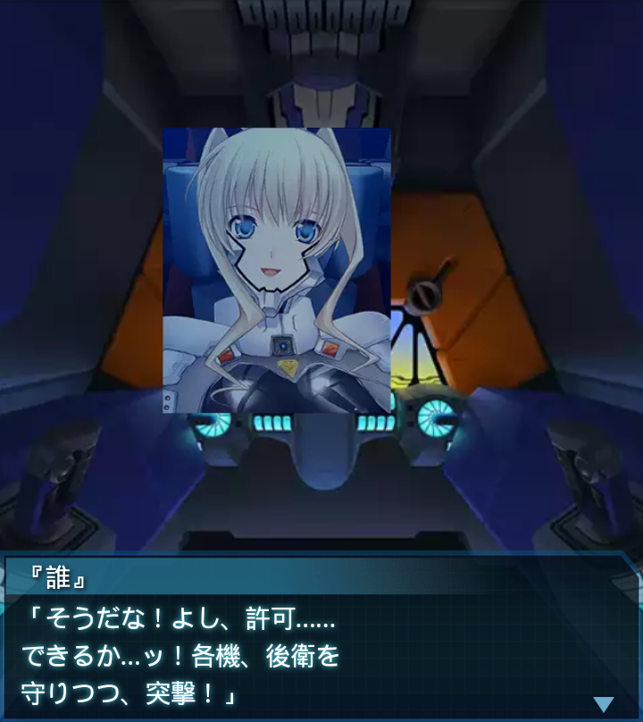

『誰』
「カイロからイスマイリヤ基地まで緑地が続いているのか。砂上戦闘の
訓練は必要無かっただろうか？」
ブリギッテ
「ルートを外れれば、そこは砂漠。砂上戦を経験しようとした、大尉の
判断は正しいかと」
『誰』
「そうだな。できれば奴らに有利な砂漠での交戦は避けたい所だが…」
イルフリーデ
「大尉、進行上にＢＥＴＡを確認！ご指示を願います！」
『誰』
「突破を最優先とする！追ってきた奴らの頬を叩く！オアーゼ１、
好きなだけ暴れろ、道を拓け！」
ブリギッテ
「了解。フッ、私が突撃前衛を任されるとはな。オアーゼ１、
吶喊する！」

イルフリーデ
「ずるい…。私も突撃前衛、やりたいのになぁ…」
『誰』
「ま、また今度、機会があればな。少尉のＥＦ－２０００は前衛装備に
換装されていないだろう…」
イルフリーデ
「許可さえ頂ければ、ハルバードを片手に、いつでも吶喊致します！」

『誰』
「そうだな！よし、許可……できるか…ッ！各機、後衛を
守りつつ、突撃！」